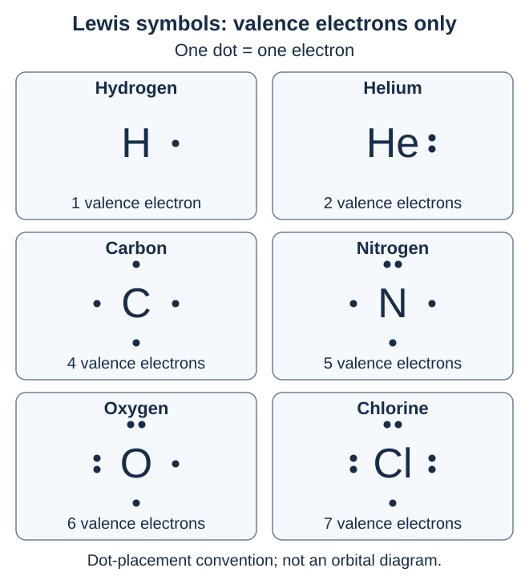
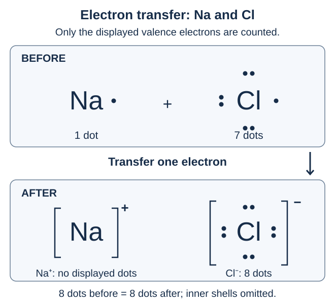
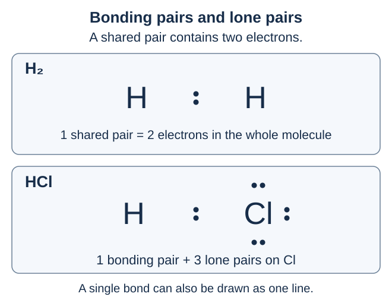
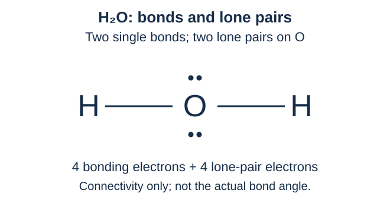
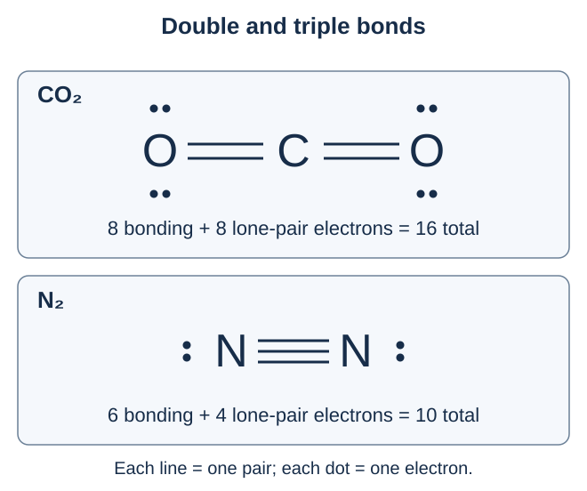

เรื่องนี้ต้องจำ: จุดแทนอิเล็กตรอนอะไร วางจุดอย่างไร รับ–เสีย–ใช้ร่วมกันต่างกันอย่างไร และกฎออกเตตมีข้อยกเว้นอะไรบ้าง · ตอบก่อนเปิดเฉลย มีช่องเขียนหลังทุกข้อย่อย
1. จุดของลิวอิสแทนอะไร?
สัญลักษณ์แบบจุดของลิวอิส ประกอบด้วยสัญลักษณ์ธาตุและจุดรอบสัญลักษณ์ โดย หนึ่งจุดแทนเวเลนซ์อิเล็กตรอนหนึ่งตัว
สำหรับอะตอมของธาตุหมู่หลัก เวเลนซ์อิเล็กตรอนคืออิเล็กตรอนในชั้นนอกสุด จึงไม่ต้องวาดอิเล็กตรอนชั้นในทั้งหมด
| หมู่ | เวเลนซ์อิเล็กตรอนของอะตอมเป็นกลาง |
|---|---|
| 1 / IA | 1 |
| 2 / IIA | 2 |
| 13 / IIIA | 3 |
| 14 / IVA | 4 |
| 15 / VA | 5 |
| 16 / VIA | 6 |
| 17 / VIIA | 7 |
| 18 / VIIIA | 8 ยกเว้น He มี 2 |
ตัวอย่าง Na จัดอิเล็กตรอนเป็นชั้นได้ 2, 8, 1 จึงเขียนเพียง 1 จุด ส่วน Cl จัดเป็น 2, 8, 7 จึงเขียน 7 จุด
คำถาม 1 — นับให้ถูกชั้น
ก. Na มีอิเล็กตรอนทั้งหมด 11 ตัว ทำไมสัญลักษณ์ลิวอิสจึงมีเพียง 1 จุด?
ข. Cl จัดอิเล็กตรอนเป็น 2, 8, 7 ต้องเขียนกี่จุด? จุดเหล่านี้แทนอิเล็กตรอนชั้นใด?
ก. เพราะแสดงเฉพาะเวเลนซ์อิเล็กตรอน ซึ่ง Na มีในชั้นนอกสุด 1 ตัว
ข. 7 จุด แทนอิเล็กตรอนในชั้นนอกสุด ไม่ใช่อิเล็กตรอนทั้งหมด 17 ตัว
2. วางจุดอย่างไร: แยกจุดเดี่ยวกับคู่จุด
ในบทนี้ใช้ข้อตกลงวางจุดรอบสัญลักษณ์ธาตุทั้ง 4 ด้าน โดยวางด้านละหนึ่งจุดก่อน แล้วจึงเพิ่มให้เป็นคู่ ด้านละไม่เกิน 2 จุด
He เป็นกรณีพิเศษ: มีอิเล็กตรอนเต็มชั้นแรก 2 ตัว จึงเขียนเป็นคู่จุดหนึ่งคู่ ภาพแสดง H ไฮโดรเจน, He ฮีเลียม, C คาร์บอน, N ไนโตรเจน, O ออกซิเจน และ Cl คลอรีน

การหมุนตำแหน่งจุดยังใช้ได้ หากจำนวนจุดและรูปแบบการจับคู่ถูกต้อง ด้านของจุดไม่ใช่ตำแหน่งจริงของอิเล็กตรอนในอวกาศ และไม่ใช่แผนภาพออร์บิทัล
คำถาม 2 — เขียนและตรวจสัญลักษณ์
ก. เขียนสัญลักษณ์ลิวอิสของ C, N, O และ Cl โดยระบุจำนวนคู่จุดกับจุดเดี่ยว
ข. นักเรียนสองคนเขียน O คนละทิศ แต่ต่างมี 2 คู่จุดและ 2 จุดเดี่ยว จะถือว่าคนหนึ่งผิดเพียงเพราะวางคนละด้านหรือไม่?
ก. ตัวอย่างการเขียนอยู่ในภาพข้างต้น ตามข้อตกลงนี้ C มีจุดเดี่ยว 4 จุด; N มี 1 คู่กับ 3 จุดเดี่ยว; O มี 2 คู่กับ 2 จุดเดี่ยว; Cl มี 3 คู่กับ 1 จุดเดี่ยว ดังตาราง
| อะตอม | คู่จุด | จุดเดี่ยว |
|---|---|---|
| C | 0 | 4 |
| N | 1 | 3 |
| O | 2 | 2 |
| Cl | 3 | 1 |
ข. ไม่ผิดเพียงเพราะทิศต่างกัน ทั้งสองแบบแสดงเวเลนซ์อิเล็กตรอนของ O จำนวน 6 ตัวเหมือนกัน
3. กฎออกเตต: ครบ 8 แต่ไม่ใช่ทุกกรณี
กฎออกเตต อธิบายแนวโน้มที่อะตอมของธาตุหมู่หลักจำนวนมากเกิดพันธะ โดยรับ เสีย หรือใช้อิเล็กตรอนร่วมกัน จนมีอิเล็กตรอนชั้นนอกสุด 8 ตัว คล้ายการจัดเรียงของแก๊สมีสกุล เช่น Ne และ Ar
สำหรับ H ชั้นแรกเต็มได้เพียง 2 อิเล็กตรอน จึงใช้เกณฑ์ครบสอง หรือ กฎดูเอต เช่นเดียวกับการจัดเรียงของ He
กฎนี้เป็นแนวทางอธิบายโครงสร้างจำนวนมาก ไม่ใช่ข้อบังคับว่าสารทุกชนิดต้องครบ 8 และการมีการจัดเรียงอิเล็กตรอนเหมือนแก๊สมีสกุล ไม่ได้ทำให้เปลี่ยนเป็นธาตุนั้น
ก่อนอ่านคำถาม: เครื่องหมาย + ที่ยกกำลังใน Na+ หมายถึงไอออนที่มีประจุ +1
คำถาม 3 — แยกครบสอง ครบแปด และชนิดธาตุ
ก. ทำไมจึงไม่พยายามเติมอิเล็กตรอนรอบ H ให้ครบ 8?
ข. Na+ และ Ne มีการจัดอิเล็กตรอนเป็น 2, 8 เหมือนกัน แปลว่า Na+ กลายเป็น Ne หรือไม่? กำหนดให้ Na มี 11 โปรตอน และ Ne มี 10 โปรตอน
ก. เพราะชั้นแรกบรรจุได้มากที่สุด 2 อิเล็กตรอน H จึงครบชั้นเมื่อมี 2 ไม่ใช่ 8
ข. ไม่กลายเป็น Ne เพราะชนิดธาตุขึ้นกับจำนวนโปรตอน Na+ ยังมี 11 โปรตอน แม้มีอิเล็กตรอนเท่ากับ Ne
4. การรับ–เสียอิเล็กตรอน: ใช้ลิวอิสแสดงการเกิดไอออน
อะตอมที่ เสียอิเล็กตรอน เกิดเป็นไอออนบวก ส่วนอะตอมที่ รับอิเล็กตรอน เกิดเป็นไอออนลบ
ตัวอย่าง Na เสีย 1 ตัว ส่วน Cl รับ 1 ตัว จึงเกิด Na+ และ Cl− ซึ่งดึงดูดกันด้วยแรงไฟฟ้า ในการเขียนลิวอิสของไอออน ให้ใส่ประจุให้ชัด โดย Cl− มีจุดครบ 8 จุด

Na+ เขียนโดยไม่มีจุด เพราะอิเล็กตรอนชั้นนอกเดิมถูกนำออกแล้ว และละการแสดงชั้นในที่เต็มไว้ ไม่ได้แปลว่า Na+ ไม่มีอิเล็กตรอน — ไอออนนี้ยังมีอิเล็กตรอนทั้งหมด 10 ตัว
NaCl ของแข็งเป็นโครงผลึกไอออนิก สูตร NaCl บอกอัตราส่วน Na+ ต่อ Cl− เท่ากับ 1:1
คำถาม 4 — ตรวจจุดและประจุ
ก. เมื่อ Na และ Cl เกิดเป็น Na+ กับ Cl− จำนวนจุดในสัญลักษณ์ของแต่ละไอออนเป็นเท่าใด?
ข. Mg มีเวเลนซ์อิเล็กตรอน 2 ตัว และ O มี 6 ตัว หากเกิด MgO ไอออนแต่ละชนิดมีประจุเท่าใด และใช้อัตราส่วนเท่าใด?
ก. Na+ ไม่มีจุดที่แสดง ส่วน Cl− มี 8 จุด พร้อมประจุ + และ − ตามลำดับ
ข. Mg เสีย 2 ตัวเป็น Mg2+ และ O รับ 2 ตัวเป็น O2− ใช้อัตราส่วน 1:1 ทำให้ประจุรวมเป็นศูนย์ โดย O2− มีจุด 8 จุด
5. การใช้อิเล็กตรอนร่วมกัน: หนึ่งคู่สร้างพันธะเดี่ยว
คู่อิเล็กตรอนร่วมพันธะ คือคู่ที่อะตอมใช้ร่วมกัน ส่วน คู่อิเล็กตรอนโดดเดี่ยว คือคู่ที่ไม่ได้ใช้สร้างพันธะระหว่างอะตอม
อิเล็กตรอนร่วมกัน 1 คู่ มี 2 ตัว เขียนแทนได้ด้วยเส้นพันธะ 1 เส้น เช่น H:H หรือ H–H ใน H2 ไฮโดรเจนทั้งสองอะตอมใช้คู่เดียวกัน จึงนับอิเล็กตรอนรอบ H แต่ละอะตอมได้ 2 ตัว
เวลาตรวจอิเล็กตรอนรอบแต่ละอะตอม ให้นับคู่ร่วมพันธะกับทั้งสองอะตอม แต่เวลาหายอดรวมทั้งโมเลกุล ให้นับคู่นั้นเพียงครั้งเดียว

คำถาม 5 — อย่านับอิเล็กตรอนซ้ำ
ก. HCl มีพันธะเดี่ยว 1 พันธะ และ Cl มีคู่อิเล็กตรอนโดดเดี่ยว 3 คู่ รอบ H และ Cl นับได้กี่อิเล็กตรอน?
ข. ใน H2 แต่ละ H นับได้ 2 อิเล็กตรอน จึงสรุปว่าทั้งโมเลกุลมีอิเล็กตรอน 4 ตัวได้หรือไม่?
ก. H นับคู่ร่วมพันธะได้ 2 ตัว ส่วน Cl มีจากคู่โดดเดี่ยว 6 ตัว รวมกับคู่ร่วมพันธะ 2 ตัว เป็น 8 ตัว
ข. ไม่ได้ ทั้งโมเลกุลมีเพียง 2 ตัว เป็นคู่เดียวที่ทั้งสองอะตอมใช้ร่วมกัน การบวกจำนวนรอบอะตอมจะนับคู่เดียวกันซ้ำ
6. โมเลกุลพื้นฐาน: ดูทั้งพันธะและคู่โดดเดี่ยว
ตัวอย่างต่อไปนี้เป็นโมเลกุลเป็นกลาง โดยอะตอมกลางครบออกเตต และ H แต่ละอะตอมครบสอง
| โมเลกุล | พันธะที่อะตอมกลางสร้าง / คู่โดดเดี่ยวบนอะตอมกลาง |
|---|---|
| CH4 | C สร้างพันธะเดี่ยว 4 พันธะ / ไม่มีคู่โดดเดี่ยว |
| NH3 | N สร้างพันธะเดี่ยว 3 พันธะ / มีคู่โดดเดี่ยว 1 คู่ |
| H2O | O สร้างพันธะเดี่ยว 2 พันธะ / มีคู่โดดเดี่ยว 2 คู่ |

คำถาม 6 — ตรวจความครบของโครงสร้าง
ก. หากเขียน H–O–H แต่ไม่แสดงคู่โดดเดี่ยวเลย ถือว่าแสดงโครงสร้างลิวอิสครบหรือยัง? ต้องเติมอะไร?
ข. NH3 มีเวเลนซ์อิเล็กตรอนรวมกี่ตัว และแบ่งเป็นอิเล็กตรอนร่วมพันธะกับอิเล็กตรอนโดดเดี่ยวอย่างละกี่ตัว?
ก. ยังไม่ครบ ต้องเติมคู่โดดเดี่ยวบน O จำนวน 2 คู่ หรือ 4 อิเล็กตรอน
ข. รวม 5+3(1)=8 ตัว แบ่งเป็นร่วมพันธะ 3 คู่ หรือ 6 ตัว และโดดเดี่ยวบน N อีก 1 คู่ หรือ 2 ตัว
7. พันธะคู่และพันธะสาม: ใช้ร่วมกันมากกว่าหนึ่งคู่
ระหว่างอะตอมคู่หนึ่ง อาจใช้อิเล็กตรอนร่วมกันมากกว่าหนึ่งคู่ได้:
| ชนิดพันธะ | คู่ที่ใช้ร่วมกัน | อิเล็กตรอนในพันธะ |
|---|---|---|
| เดี่ยว | 1 คู่ | 2 ตัว |
| คู่ | 2 คู่ | 4 ตัว |
| สาม | 3 คู่ | 6 ตัว |
ตัวอย่าง CO2 เขียนเป็น O=C=O โดย O แต่ละอะตอมมีคู่โดดเดี่ยว 2 คู่ ส่วน C ไม่มีคู่โดดเดี่ยว C นับจากพันธะคู่ทั้งสองด้านได้ 4+4=8 ตัว ส่วน O แต่ละอะตอมนับจากพันธะคู่ 4 ตัว และคู่โดดเดี่ยวอีก 4 ตัว จึงครบ 8 เช่นกัน

คำถาม 7 — ตรวจทั้งยอดรวมและรอบอะตอม
ก. CO2 มีเวเลนซ์อิเล็กตรอนรวมกี่ตัว และเหตุใดจึงไม่ใช้ 8+8+8 เป็นยอดรวมทั้งโมเลกุล?
ข. N2 ซึ่งเป็นโมเลกุลไนโตรเจน เขียนเป็น N≡N โดยแต่ละ N มีคู่โดดเดี่ยว 1 คู่ จงนับอิเล็กตรอนรอบ N แต่ละอะตอมและยอดรวมทั้งโมเลกุล
ก. รวม 4+2(6)=16 ตัว การใช้ 8+8+8 จะนับอิเล็กตรอนร่วมพันธะซ้ำ ยอดจริงประกอบด้วยอิเล็กตรอนในพันธะคู่ทั้งสองรวม 8 ตัว และคู่โดดเดี่ยวบน O รวม 8 ตัว
ข. รอบ N แต่ละอะตอมมีจากพันธะสาม 6 ตัว และคู่โดดเดี่ยว 2 ตัว รวม 8 ตัว ส่วนทั้งโมเลกุลมี 6+2+2=10 ตัว ตรงกับ 5+5 จากอะตอม N ทั้งสอง
8. ข้อยกเว้น: ไม่ใช่ทุกอะตอมต้องครบ 8
นอกจาก H ที่ใช้เกณฑ์ครบสอง ยังมีข้อยกเว้นสำคัญในแบบจำลองลิวอิส:
| ลักษณะ | ตัวอย่างและสิ่งที่ต้องสังเกต |
|---|---|
| รอบอะตอมกลางน้อยกว่า 8 | BF3 มีพันธะเดี่ยวรอบ B สามพันธะ จึงนับรอบ B ได้ 6 ตัว |
| เวเลนซ์อิเล็กตรอนรวมเป็นจำนวนคี่ | NO มี 5+6=11 ตัว จึงไม่สามารถจัดเป็นคู่ครบทั้งหมดและให้อะตอมทั้งสองครบออกเตตพร้อมกัน |
| รอบอะตอมกลางมากกว่า 8 | โครงสร้างลิวอิสของ SF6 มีพันธะเดี่ยวรอบ S หกพันธะ จึงนับได้ 12 ตัว |
ธาตุบางชนิดตั้งแต่คาบ 3 ขึ้นไปเขียนโครงสร้างลิวอิสที่มีอิเล็กตรอนรอบอะตอมกลางเกิน 8 ได้ แต่ ห้ามนำข้อยกเว้นนี้ไปใช้กับ C, N, O และ F ซึ่งอยู่คาบ 2
คำถาม 8 — รู้ว่ากฎใช้ได้ถึงไหน
ก. BF3, NO และ SF6 เป็นข้อยกเว้นลักษณะใด? ระบุจำนวนอิเล็กตรอนที่ใช้ประกอบเหตุผล
ข. สามารถวาด C ในโมเลกุลทั่วไปให้มีพันธะเดี่ยว 5 พันธะ แล้วอ้างข้อยกเว้นแบบเดียวกับ S ใน SF6 ได้หรือไม่?
ก. BF3: รอบ B มีเพียง 6 ตัว; NO: เวเลนซ์อิเล็กตรอนรวมเป็นจำนวนคี่ 11 ตัว; SF6: รอบ S มี 12 ตัวในโครงสร้างลิวอิส
ข. ไม่ได้ พันธะเดี่ยว 5 พันธะจะทำให้รอบ C มี 10 ตัว ซึ่งเกินออกเตต C เป็นธาตุคาบ 2 จึงใช้ข้อยกเว้นแบบขยายออกเตตของ S ไม่ได้
แหล่งศึกษาต่อและตรวจสอบ
Recall goals: What dots represent, how to place them, electron gain, loss and sharing, and exceptions to the octet rule. Answer before revealing solutions; writing space follows every subpart.
1. What do Lewis dots represent?
A Lewis dot symbol consists of an element symbol surrounded by dots. One dot represents one valence electron.
For main-group atoms, valence electrons occupy the outermost shell. Inner-shell electrons are therefore not all drawn.
| Group | Valence electrons in a neutral atom |
|---|---|
| 1 / IA | 1 |
| 2 / IIA | 2 |
| 13 / IIIA | 3 |
| 14 / IVA | 4 |
| 15 / VA | 5 |
| 16 / VIA | 6 |
| 17 / VIIA | 7 |
| 18 / VIIIA | 8, except He has 2 |
For example, Na has shell populations 2, 8, 1, so its symbol shows only one dot. Cl has 2, 8, 7, so it shows seven dots.
Question 1 — Count the correct shell
a. Na has 11 electrons in total. Why does its Lewis symbol show only one dot?
b. Cl has shell populations 2, 8, 7. How many dots should be drawn, and which shell do they represent?
a. The symbol shows only valence electrons. Na has one electron in its outermost shell.
b. Seven dots, representing its outermost-shell electrons rather than all 17 electrons.
2. Place the dots: single dots and pairs
This review uses the convention of placing one dot on each of the four sides before pairing them, with at most two dots per side.
He is a special case: its first shell is filled with two electrons, drawn as one pair. The figure shows H hydrogen, He helium, C carbon, N nitrogen, O oxygen, and Cl chlorine.
Rotated arrangements are valid if the dot count and pairing pattern are correct. The sides do not represent actual electron positions in space, and this is not an orbital diagram.
Question 2 — Draw and check symbols
a. Draw Lewis symbols for C, N, O, and Cl. State the number of dot pairs and single dots for each.
b. Two students draw O in different orientations, each with two dot pairs and two single dots. Is one wrong merely because the dots are on different sides?
a. The figure above provides example drawings. Under this convention, C has four single dots; N has one pair and three single dots; O has two pairs and two single dots; Cl has three pairs and one single dot, as tabulated.
| Atom | Dot pairs | Single dots |
|---|---|---|
| C | 0 | 4 |
| N | 1 | 3 |
| O | 2 | 2 |
| Cl | 3 | 1 |
b. No. Both show the same six valence electrons of O with the correct pairing pattern.
3. The octet rule: eight, with exceptions
The octet rule describes the tendency of many main-group atoms to gain, lose, or share electrons when forming bonds, reaching eight outer-shell electrons like noble gases such as Ne and Ar.
For H, the first shell holds only two electrons. It follows the duet rule, corresponding to the configuration of He.
This rule guides the description of many structures; it does not require every species to have eight. Having a noble-gas electron configuration does not turn an atom or ion into that noble-gas element.
Before the question: the superscript + in Na+ denotes an ion with charge +1.
Question 3 — Distinguish duets, octets, and element identity
a. Why should we not try to put eight electrons around H?
b. Na+ and Ne both have shell populations 2, 8. Has Na+ become Ne? Given: Na has 11 protons and Ne has 10.
a. The first shell holds at most two electrons. H completes that shell with two, not eight.
b. No. Element identity depends on proton number. Na+ still has 11 protons even though it has the same electron count as Ne.
4. Gain and loss: show ion formation with Lewis symbols
An atom that loses electrons forms a positive ion, or cation. An atom that gains electrons forms a negative ion, or anion.
For example, Na loses one electron and Cl gains one, forming Na+ and Cl−, which attract electrostatically. Clearly label the charges in ionic Lewis symbols. Cl− has eight dots.
Na+ is drawn with no dots because its original outer-shell electron has been removed and the filled inner shells are omitted. This does not mean Na+ has no electrons: it still has 10 electrons in total.
Solid NaCl is an ionic crystal. The formula gives a 1:1 ratio of Na+ to Cl−.
Question 4 — Check dots and charges
a. When Na and Cl form Na+ and Cl−, how many dots are displayed in each ionic Lewis symbol?
b. Mg has two valence electrons and O has six. In MgO, what are the ion charges and the required ion ratio?
a. Na+ displays no dots; Cl− has eight dots. Their charges are + and − respectively.
b. Mg loses two electrons to become Mg2+; O gains two to become O2−. A 1:1 ratio gives zero total charge. O2− has eight dots.
5. Sharing electrons: one pair makes a single bond
A bonding pair is shared between atoms. A lone pair is not used to form a bond between atoms.
One shared pair contains two electrons and can be represented by one bond line, as in H:H or H–H. In H2, both hydrogen atoms use the same pair, so each H counts two electrons around itself.
When checking electrons around each atom, include the shared pair for both bonded atoms. When finding the total for the molecule, count that pair only once.
Question 5 — Avoid double-counting electrons
a. HCl has one single bond and three lone pairs on Cl. How many electrons are counted around H and around Cl?
b. Each H in H2 counts two electrons. Does this mean the whole molecule contains four electrons?
a. H counts two from the bonding pair. Cl counts six from its lone pairs plus two from the bonding pair, giving eight.
b. No. The whole molecule has only two electrons, in the single pair shared by both atoms. Adding the counts around both atoms counts the same pair twice.
6. Simple molecules: include bonds and lone pairs
These are neutral molecules. Each central atom has an octet, and each H has a duet.
| Molecule | Bonds formed by central atom / lone pairs on central atom |
|---|---|
| CH4 | C forms four single bonds / no lone pairs |
| NH3 | N forms three single bonds / one lone pair |
| H2O | O forms two single bonds / two lone pairs |
Question 6 — Check that a structure is complete
a. Is H–O–H without any lone pairs a complete Lewis structure? What must be added?
b. How many valence electrons does NH3 have in total? How many are bonding and how many are in lone pairs?
a. It is incomplete. Add two lone pairs, or four electrons, on O.
b. The total is 5+3(1)=8 electrons: three bonding pairs, or six electrons, and one lone pair, or two electrons, on N.
7. Double and triple bonds: share more than one pair
Two atoms can share more than one pair of electrons:
| Bond type | Shared pairs | Electrons in bond |
|---|---|---|
| Single | 1 pair | 2 |
| Double | 2 pairs | 4 |
| Triple | 3 pairs | 6 |
For example, CO2 is written O=C=O. Each O has two lone pairs; C has none. C counts 4+4=8 electrons from the two double bonds. Each O counts four from its double bond and four from its lone pairs, also giving eight.
Question 7 — Check the total and each atom’s count
a. How many valence electrons does CO2 have in total? Why is 8+8+8 not the molecular total?
b. N2, molecular nitrogen, is drawn N≡N with one lone pair on each N. Count the electrons around each N and the total for the molecule.
a. The total is 4+2(6)=16 electrons. Adding 8+8+8 double-counts bonding electrons. The actual total is eight electrons in the two double bonds plus eight in lone pairs on O.
b. Each N counts six from the triple bond and two from its lone pair, giving eight. The molecular total is 6+2+2=10, matching 5+5 from the two N atoms.
8. Exceptions: not every atom has an octet
Besides H following a duet, important exceptions in the Lewis model include:
| Type | Example and key count |
|---|---|
| Fewer than eight around the central atom | BF3 has three single bonds around B, giving six electrons around B. |
| An odd total of valence electrons | NO has 5+6=11 electrons. They cannot all be paired while giving both atoms octets. |
| More than eight around the central atom | The Lewis structure of SF6 has six single bonds around S, giving 12 electrons around S. |
Some elements in period 3 and beyond can have more than eight electrons around the central atom in Lewis structures. Do not apply this expanded-octet exception to period-2 C, N, O, or F.
Question 8 — Know the rule’s limits
a. What type of exception is illustrated by BF3, NO, and SF6? Include the relevant electron count.
b. Can C in an ordinary molecule be drawn with five single bonds by invoking the same exception as S in SF6?
a. BF3: only six electrons around B. NO: an odd molecular valence-electron total of 11. SF6: 12 electrons around S in its Lewis structure.
b. No. Five single bonds would give 10 electrons around C, exceeding an octet. C is in period 2, so the expanded-octet exception used for S does not apply.